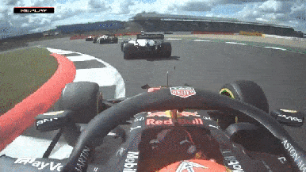
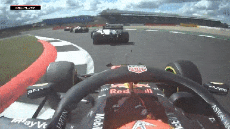

BRITISH GRAND PRIX
Cicuit Length:
5.891km (3.660 mi)
Turns:
18
Number of Laps:
52
First Grand Prix:
1950
Race Distance:
306.198 km
Austria's race takes place in Spielberg . Spielberg is a township in Austria,
about 5.293 people live in Paris. And across Austria live about 8,9 Million inhabitants. So far the record holder
of this circuit is Max Verstappen. This year (2021) the race will be on July 18. The fastest speed last year (2019) was measured at 329.5 km/h.
The French Grand Prix is often the tenth event of the Formula 1 of the Calendar year.


Winners of the British GP
2020 - Lewis Hamilton
2019 - Lewis Hamilton
2018 - Sebastian Vettel
2017 - Lewis Hamilton
2016 - Lewis Hamilton
2015 - Lewis Hamilton
2014 - Lewis Hamilton
2013 - Nico Rosberg
2012 - Mark Webber
2011 - Fernando Alonso
2010 - Mark Webber
2009 - Sebastian Vettel
2008 - Lewis Hamilton
2007 - Kimi Räikkönen